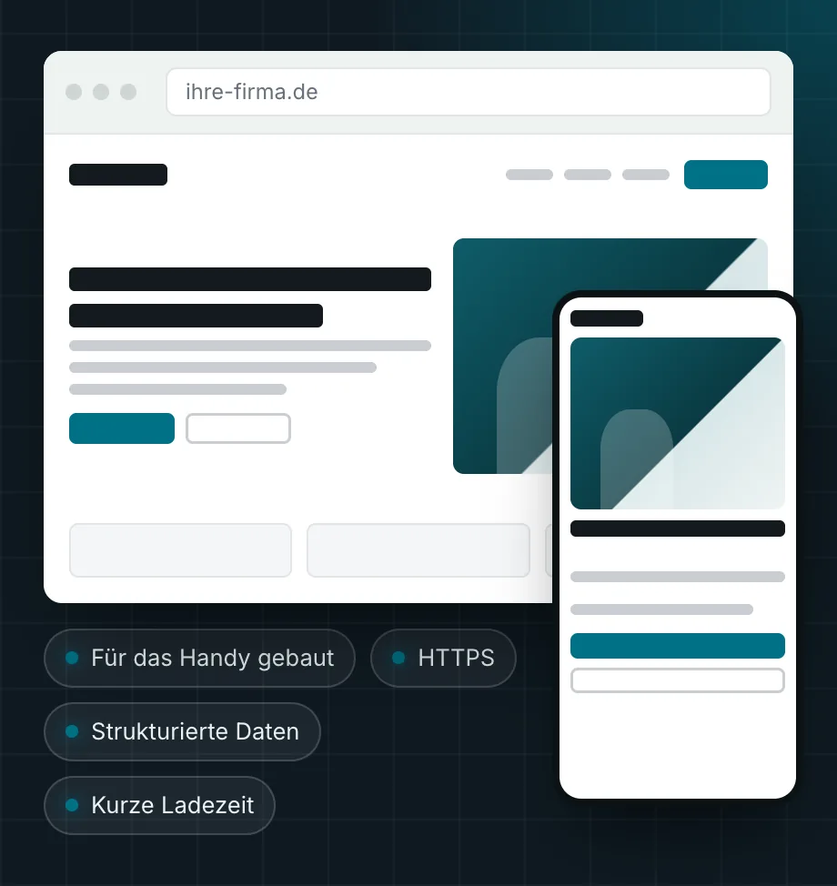

Webdesign aus Lehre: Websites, über die Kunden anfragen.
Wir bauen Websites für Firmen aus Braunschweig, Wolfsburg und ganz Deutschland. Schnell auf dem Handy, sauber gebaut für Google und KI-Suchen und mit einem Ansprechpartner für Website und IT.
- Festpreis
- nach dem Erstgespräch
- Seit 2002
- IT-Systemhaus in Lehre
- Ein Ansprechpartner
- für Website, Hosting und E‑Mail
Webdesign entscheidet oft über den ersten Kontakt
Wer einen Dienstleister sucht, landet oft zuerst auf dessen Website. Ist sie veraltet, lädt langsam oder ist auf dem Handy kaum zu bedienen, ruft der Interessent eher beim nächsten Anbieter an. Das merkt man nicht, weil diese Anfragen einfach nie ankommen.
Eine gute Firmen-Website beantwortet die Fragen, die Kunden vor dem Anruf haben: Was bieten Sie an, für wen, wo, und wie erreiche ich Sie? Sie ist so gebaut, dass Google und KI-Suchen sie verstehen. Und sie wird gepflegt, damit sie nicht mit den Jahren selbst zum Sicherheitsrisiko wird. Updates und IT-Sicherheit gehören für uns als IT-Systemhaus ohnehin zum Alltag.
Was in jeder Website steckt
Gestaltung nach Ihrem Betrieb
Kein Baukasten: Farben, Schrift und Bilder kommen aus Ihrem Auftritt, die Struktur aus dem, was Ihre Kunden suchen.
Texte, die Fragen beantworten
Wir schreiben die Seiten nach einem Gespräch mit Ihnen: Leistungen, Einsatzgebiet, Ablauf, häufige Fragen. Sie geben jede Seite frei.
Technik, die Google versteht
Schnelle Ladezeit, saubere Überschriften, strukturierte Daten und eine Sitemap. Die Grundlage für SEO ist damit von Anfang an gelegt.
Kontakt ohne Umwege
Telefonnummer zum Antippen, ein kurzes Formular und klare Wege zur Anfrage auf jeder Seite, nicht nur auf der Kontaktseite.
Lesbar für KI-Suchen
Klare Antworten und eindeutige Angaben, damit ChatGPT, Gemini und die KI-Übersichten von Google Ihr Angebot richtig wiedergeben können. Mehr unter GEO.
Hosting, Domain und E‑Mail
Auf Wunsch übernehmen wir das komplett, inklusive Zertifikat und Datensicherung. Sie haben einen Ansprechpartner statt drei Anbieter.
Drei Bausteine, ein Festpreis
Sie bekommen vor dem Start ein schriftliches Angebot mit Festpreis. Zusätzliche Kosten entstehen nur, wenn Sie vorher zustimmen.
Website
Neubau oder Relaunch Ihrer bestehenden Seite.
- Startseite und Seiten für Ihre Leistungen
- Kontakt, Impressum und Datenschutz eingebunden
- Für Handy und Desktop gebaut
- Weiterleitungen der alten Adressen
Festpreis nach dem Erstgespräch
Website mit lokalen Seiten
Für Betriebe, die in mehreren Orten gefunden werden wollen.
- Alles aus „Website“
- Seiten für Leistung und Ort im echten Einsatzgebiet
- Google-Unternehmensprofil eingerichtet und verknüpft
- Einrichtung der Google Search Console
Festpreis nach dem Erstgespräch
Pflege & Sicherheit
Damit die Website aktuell und sicher bleibt.
- Updates, Zertifikat und Datensicherung
- Regelmäßige Kontrolle auf Fehler und Angriffe
- Kleine Änderungen an Texten und Bildern
- Ein fester Ansprechpartner in Lehre
Monatlicher Festpreis
Von der ersten Frage bis zur fertigen Website
Sie sehen die Website, bevor sie online geht, und geben jeden Schritt frei.
Erstgespräch
Was bieten Sie an, wer soll anfragen, was stört an der jetzigen Seite? Bei Ihnen vor Ort oder per Video.
Konzept und Festpreis
Seitenplan, Umfang und Zeitplan schriftlich. Sie entscheiden in Ruhe.
Entwurf und Umsetzung
Sie bekommen einen Vorschau-Link, sagen, was passt und was nicht, und wir setzen es um.
Start und Pflege
Umzug mit Weiterleitungen, Anmeldung bei Google, danach Pflege nach Wunsch.
Was sich mit einer neuen Website ändert
Typische ältere Firmen-Website
- Auf dem Handy klein und schwer zu bedienen
- Leistungen in einem langen Text, Orte gar nicht genannt
- Kontakt nur auf einer Unterseite
- Seit Jahren keine Updates, Plugins veraltet
- Niemand weiß, wie viele Anfragen sie bringt
Website von STKom
- Für das Handy gebaut, Telefonnummer zum Antippen
- Eine Seite je Leistung, die Ihre Kunden suchen
- Anfrage von jeder Seite aus möglich
- Gepflegt und gesichert durch Ihr IT-Systemhaus
- Anfragen werden gezählt, ohne Ihre Besucher auszuspähen

Webdesign für Firmen zwischen Braunschweig und Wolfsburg
Unser Sitz in Lehre liegt direkt an A2 und A39. Braunschweig und Wolfsburg erreichen wir in etwa 20 Minuten, Wolfenbüttel, Gifhorn und Helmstedt in etwa 30, Peine und Salzgitter in etwa 35 Minuten. Termine bei Ihnen im Betrieb sind deshalb kein Aufwand. Für Unternehmen außerhalb der Region arbeiten wir per Video.
Häufige Fragen zum Webdesign
Was kostet eine Website bei STKom?
Das hängt von der Zahl der Seiten, den Texten und den Funktionen ab, etwa ob es Ortsseiten oder ein Buchungsformular braucht. Nach dem Erstgespräch bekommen Sie ein schriftliches Angebot mit Festpreis. Pflege und Hosting laufen danach zu einem monatlichen Festpreis, wenn Sie das möchten.
Bauen Sie mit WordPress?
Standardmäßig nicht. Wir bauen schlanke Websites ohne schweres Content-System. Sie laden schneller und bieten Angreifern weniger Fläche, weil es keine Plugins gibt, die veralten. Wenn Sie Inhalte regelmäßig selbst ändern möchten, besprechen wir vorab, welche Lösung dafür passt.
Schreiben Sie auch die Texte?
Ja. Wir führen ein Gespräch mit Ihnen, schreiben daraus die Seiten und legen sie Ihnen zur Freigabe vor. Angaben zu Leistungen, Preisen und Zertifikaten übernehmen wir nur so, wie Sie sie bestätigen.
Was passiert bei einem Relaunch mit meinen Platzierungen bei Google?
Bevor die neue Seite online geht, erfassen wir alle Adressen der alten Website, die bei Google Besucher bringen. Jede davon leiten wir auf die passende neue Seite weiter. So gehen die Signale, die Ihre Seite über Jahre gesammelt hat, möglichst nicht verloren. Danach beobachten wir die Search Console einige Wochen lang.
Übernehmen Sie auch Hosting, Domain und E‑Mail?
Ja, auf Wunsch komplett, inklusive Zertifikat, Datensicherung und Postfächern in Microsoft 365. Für Website und E-Mail haben Sie dann einen Ansprechpartner.
Arbeiten Sie nur in der Region?
Nein. Termine vor Ort bieten wir zwischen Braunschweig, Wolfsburg und Peine an, alle anderen Projekte in ganz Deutschland laufen per Video und Vorschau-Link.
Passt oft dazu
Neue Website? Erzählen Sie uns kurz, worum es geht.
Ein paar Sätze genügen: Was machen Sie, und was soll die Website können? Wir melden uns zu unseren Geschäftszeiten mit einer ehrlichen Einschätzung.
- Telefon, Mo–Do 8:30–17:00 Uhr, Fr 8:30–15:30 Uhr05308 935030
- E-Mailinfo@stkom.de
- AdresseBerliner Straße 60, 38165 Lehre